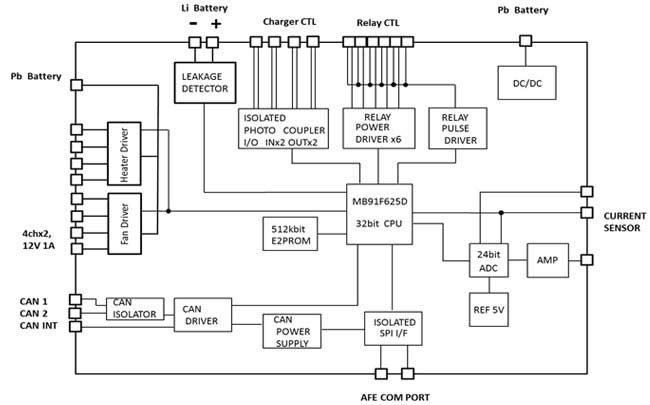
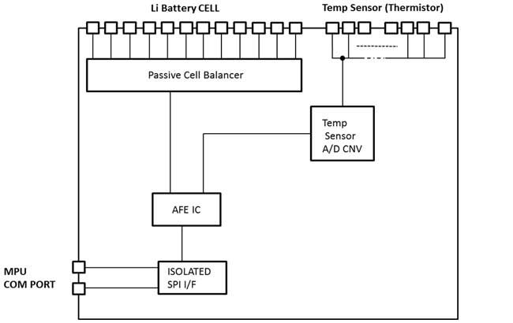
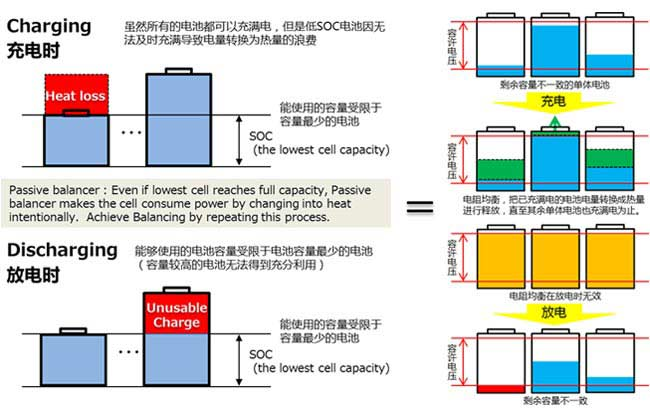
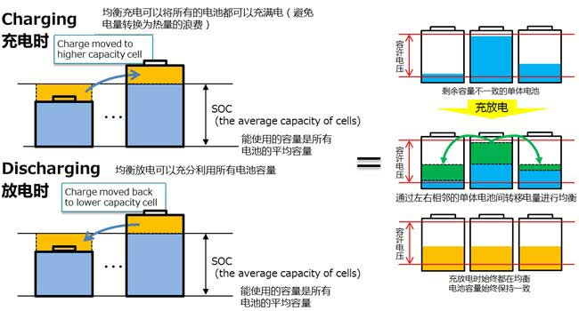
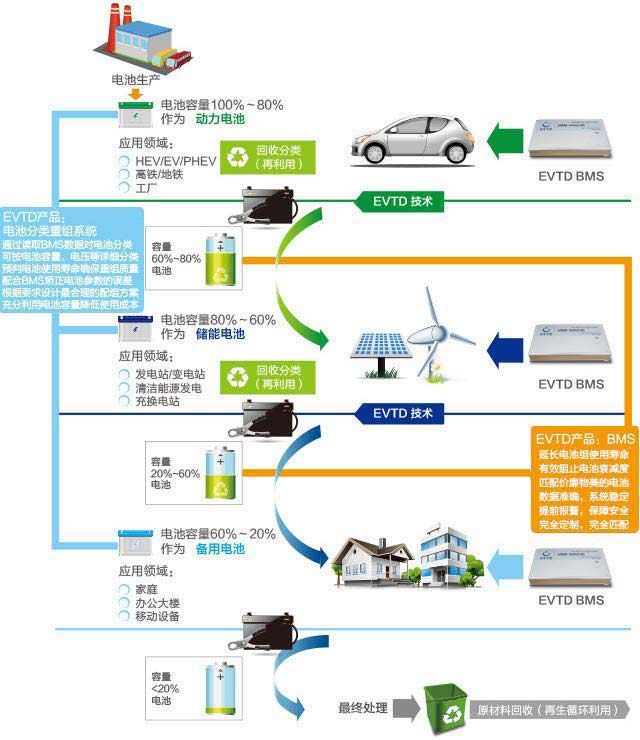

关于我们
关于我们 应用领域
应用领域 产品展示
产品展示 技术资料
技术资料 人才招聘
人才招聘 联系我们
联系我们技术资料
BMS产品的功能及构造
1.主控部分的主要功能：
□ 检测功能（电池组电流值）;
□ 各种演算功能（单体电池容量计算、SOC计算、SOH计算）;
□ 各种控制功能（控制对象：充电器、继电器等。控制方法：数字 I/O
（驱动电源、光电耦合器等）、CAN、模拟输出、继电器驱动器等）;
□ 单体电池温度控制功能（Fan、Heater，最多各4ch）;
□ 与外部机器（VCU等）的通信功能（CAN）;
□ 报警功能（通过CAN通信或数字I/O发出报警）;
□ 数据记录功能（SOC、电池充放电次数、异常记录、电池组信息、生产信息等)
□ 自我诊断功能（看门狗计时器、CPU・CAN通信・内存检测、漏电检测等）

2.从控部分的主要功能：□ 检测功能（电压：12ch，温度：最大13ch，其中单体电池12ch，剩余的1ch用于电池系统）
□ 单体电池均衡功能（被动均衡：300mA）
□ 单体电池均衡功能（选配主动均衡：1.5A）
□ 自我诊断功能（电压、温度传感线的断线检测）电检测等）

3.电压、温度检测的三重保障： □BSU上的IC内部具有检测电池电压及热敏电阻的双重电压检测功能，同时还在IC外部追加了外部电压检测功能（以每个BSU为单位）。
□先在IC内部对电压值进行自我比较，确认没有异常后，再通过外部电压检测功能确认IC是否正常，以保证检测到的电压值的准确性。
电池均衡方式比较
1.采用被动均衡的BMS
Passive Balancing Solution
【采用被动均衡的BMS】均衡电流 0.1A，通过电阻进行被动均衡电检测等）。

2.采用主动均衡的BMS Active Balancing Solution
【采用主动均衡的BMS】均衡电流1.5A，通过转移方式进行主动均衡;
《主动均衡的最大优势》 电池系统中所有单体电池的剩余容量都能得到充分利用，从而使电池系统的性能实现最大化。

电池二次利用技术
EVTD自主研发了电池二次利用技术，可以通过均衡和控制使已经用过的电池得以二次利用，提高电池的使用率。在降低电池利用成本的同时，节约宝贵的资源。

Copyright @ EVTD. All rights reserved